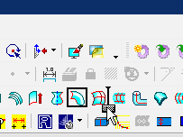

ウィンドウ
Evo.Shipのウィンドウ構成

メニューバー、ツールバー
 左端をマウスでドラッグすることで位置を変更したり、フローティングさせることができます。
左端をマウスでドラッグすることで位置を変更したり、フローティングさせることができます。
ツールバーのボタンの中には複数のコマンドがメニューのようになっているものもあります。(右側に矢印のあるもの)

ツールバーのボタンはAltキーを押しながらドラッグ＆ドロップで位置を変えられます。

ドキュメント ウィンドウ
Evo.Shipのドキュメント（３Ｄモデル,図面）毎に作成されます。同時に複数のドキュメントを開くことができ、いづれか１つがアクティブドキュメントとして編集対象となります。
同一のドキュメントに複数のウィンドウを開いたり、分割することによって同一のモデルの異なった部分を表示することができます。
ドキュメント ウィンドウでの操作
図面ドキュメントはMicrosoft(R) Excel(R)のようなウィンドウになります。 ※Microsoft（R）、Excel（R）は米国Microsoft Corporationの米国およびその他の国における登録商標または商標です。
モデル構成、コマンドダイアログ、船殻設計、情報ウィンドウ
-
モデル構成
アクティブなドキュメントに存在する要素をツリー形式で一覧表示します。
操作方法 -
コマンドダイアログ
各コマンドの値入力のためのコントロールが表示されます。
操作方法 -
船殻設計
モデル構成内の要素グループ"船殻設計"をルートとして表示するツリーです。操作方法はモデル構成と同様です。（船殻設計用にみやすく表示しています。)
- 情報ウィンドウ
ヘッダーをマウスでドラッグすることで位置を変更したり、フローティングさせることができます。
タブをつけて重ねることができます。
自動的に隠すことができます。
ステータスバー
各コマンドが実行状態やガイダンスを表示します。 ツールバー上のコマンドアイコン上にマウスがあると、コマンドの簡単な説明が表示されます。